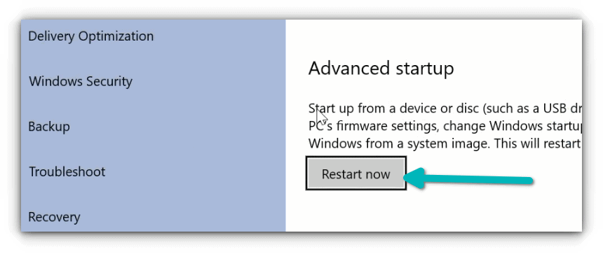
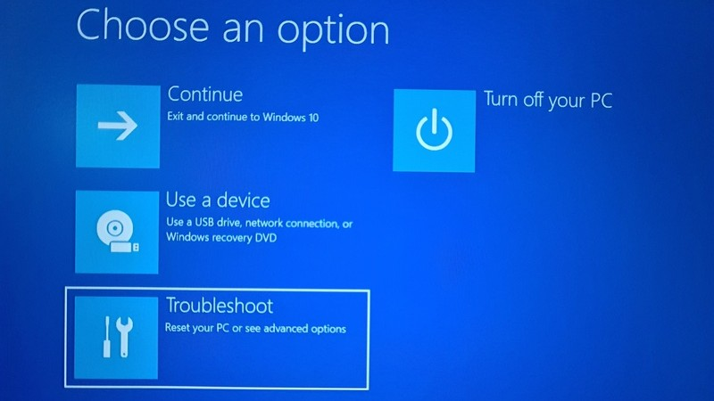
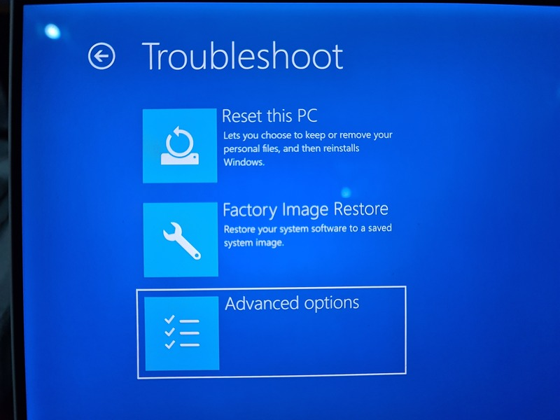
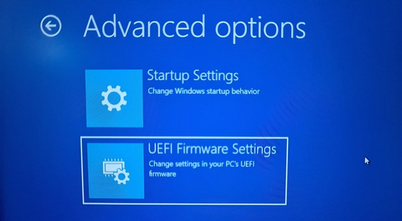

These days, if you buy a computer pre-installed with Windows, it comes with UEFI boot system.
UEFI is not something that Microsoft invented, instead it is a protocol existing even before
Windows 8. Some Mac devices have been using UEFI for a longer time.
With UEFI comes the feature of “secure boot” which boots only those bootloaders that are signed
in to UEFI firmware. This security feature prevents rootkit malware and provides an additional
layer of security.
The downside of secure boot is that if you want to boot from a Linux USB or if you want to use a
bootable Windows USB, it won’t allow that. Sometimes, it may also create problems in dual
booting with Linux.
The good thing is that you can easily disable the secure boot. All you have to do is to access
the UEFI firmware settings, go to the Boot option and disbale it.
Don’t worry. I won’t leave you hanging like that. Let me show the steps in detail.
Disabling UEFI secure boot in Windows 10
Step 1: Access the UEFI settings
You may access the UEFI settings by powering on your system and using the F2/F10 or F12 keys at
the boot time. If that doesn’t work, don’t worry. You can go to the firmware settings from
within Windows as well. Here’s how.
Search for UEFI and go to Change advanced startup options in Windows menu.
Now, click on the Restart now button under Advanced startup option.

After a few seconds, you should see a blue screen with a few options to choose from. You have to click on Troubleshoot option.

Now, some systems will give you the UEFI Firmware Settings on this screen. Some system may require you to choose an Advanced options. If you see the UEFI Firmware Settings option, well, click on it. Otherwise, click the Advanced options.

When you see the UEFI Firmware Settings, click on it.

Step 2: Disable secure boot in UEFI
By this time you must have been booted in to UEFI utility. You can change various settings here
but all we want to do right now is to disable secure boot option here.
Move to Boot tab. Here, you’ll find Secure Boot option which is set to enabled.
Use the arrow key to go to Secure Boot option and then press enter to select it. Use + or – to
change its value. Confirm it when prompted.
Press F10 to save the changes and exit the UEFI settings..